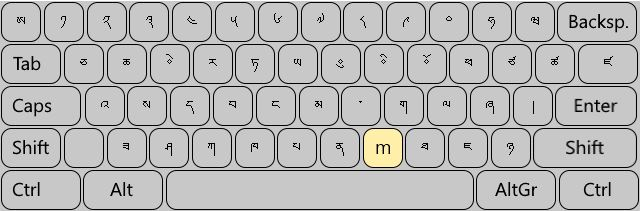

Tibetan keyboards
Contents
Tibetan keyboards#
Warning
Keyboards are a primary attack vector on computer integrity. Never, ever install keyboards from unvalidated sources, neither on computer nor on mobile.
What’s the standard?#
Unfortunately there is no single system or standard that’s available on all platforms.
In June of 2005, the Chinese Institute of Electronic Technology Standardization organized a national expert group to develop the national standard for Tibetan keyboard layout,1 described in standard GB/T 22034-2008 (
Tibetan PRC). It’s supported by Linux and Windows, but not by MacOS.2Researchers with Western background usually use Wylie, since the keyboard layout directly corresponds to the main Tibetan transliteration method. Wylie implementations are available for Windows, Linux and macOS. An the other hand: Tibetan native speakers almost never use Wylie.
Additionally, there’s a vast number of custom layouts and tools used by different communities and are suitable only for specific operating systems and/or applications.
Recommendation#
If missing macOS support is not a concern,
Tibetan PRCmight be the most future-proof keyboard system. Linux and Windows support this keyboard without any extra configuration steps required.Westerners might want to use Wylie-keyboards, but OS-support seems to be slowly declining over the years, and installation requires extra configuration-steps and/or third-party tools (Windows).
Overview: Computers and laptops#
Keyboard |
Windows |
macOS |
Linux |
|---|---|---|---|
Wylie |
+ + (3rd party) |
+ (bug ridden) |
+ + (requires config effort) |
Tibetan (PRC) |
+ + |
- - |
+ + |
Tibetan (qwerty) |
- - |
+ + |
- - |
Monlam |
+ +3 |
+ +3 |
- - |
Mobile devices#
Android |
iOS |
|
|---|---|---|
Google Gboard |
+ + |
- -4 |
iOS |
- - |
+ +5 |
You know of other or better keyboards?
If you are using different keyboards or have comments to make, let us know!
Standard Tibetan keyboard: Tibetan (PRC)#

{kind=link}
Available on Linux and Windows, Tibetan (PRC) stems from some initial efforts to standardize Tibetan keyboards.
{kind=link}
The following article describes the keyboard and it’s history well:
Unfortunately, Apple did not adopt this standardization effort.
- 1
- 2
Request for support suggested with Apple in 2022-05.
- 3(1,2)
Many mirrors of the monlam installers are circulating, some of them infected with compromising viruses.
- 4
While the Gboard app is available for iOS too, the Tibetan keyboard is not included on iOS.
- 5
The iOS Tibetan keyboard mirrors the layout of Apple macOS’s
Tibetan QWERTYkeyboard.